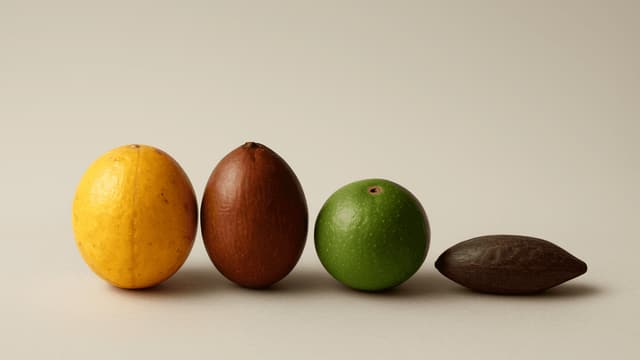
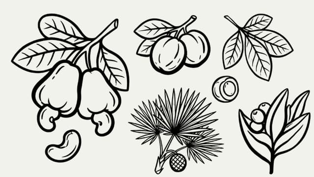
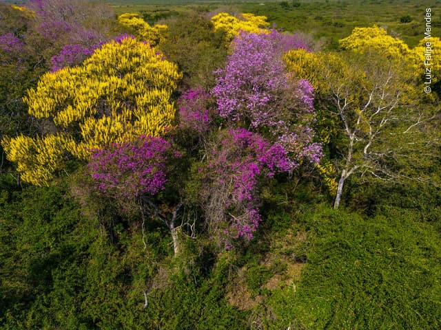
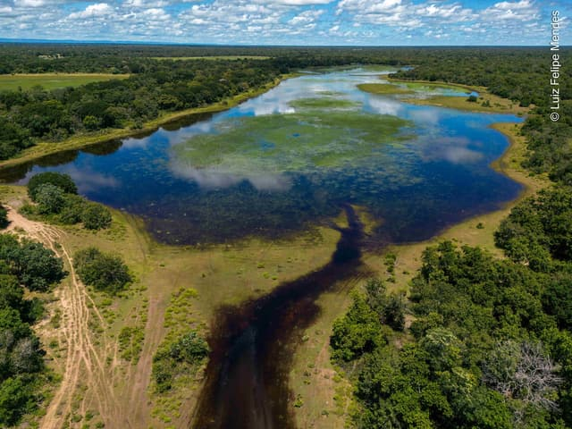

SÃO 04 FRUTOS NATIVOS QUE SABEM :
Nutrir a pele
Fortalecer

os fios


Regenerar a barreira

Proteger

do tempo

Hidratar sem

gastar água

Cuidar do bioma
Os ativos da Curie nascem de frutos nativos que concentram uma das maiores potências biológicas do Brasil. O acuri e a bocaiúva oferecem óleos ricos em ácidos graxos, carotenoides e antioxidantes capazes de restaurar, nutrir e fortalecer a barreira cutânea. A guavira, símbolo do Cerrado, fornece vitamina C e flavonoides com ação revitalizante, enquanto o baru aporta proteínas, minerais e compostos fenólicos de alta atividade antioxidante.
POR ISSO:
Cada fórmula nasce no laboratório.
SEMPRE:
Vegana, biodegradável e sem plástico.
PARA QUEM:
Quer cuidado com origem e propósito.
Nossa ciência,
sua pele

NOSSAS LINHAS
Linhas Curie
“Um cientista em seu laboratório não é apenas um técnico; é também uma criança diante de fenômenos naturais que o impressionam como contos de fadas.”
FALE COM A GENTE
Tire dúvidas sobre os produtos, faça seu pedido ou venha conhecer os bastidores do Cerrado e do Pantanal.
Curie
CIÊNCIA, BIODIVERSIDADE E COMPROMISSO SOCIAL SÃO OS NOSSOS MAIORES VALORES. CADA FÓRMULA NASCE DE PESQUISA APLICADA E DE UMA PERGUNTA NORTEADORA: COMO GERAR IMPACTO POSITIVO NA PELE, NAS PESSOAS E NO BIOMA AO MESMO TEMPO?
A Curie Biocosméticos nasce do encontro entre pesquisa científica de ponta e a força dos biomas brasileiros. A partir do Cerrado e do Pantanal, territórios com uma das maiores biodiversidades do planeta, transformamos frutos nativos em cosméticos naturais de alta performance, preservando as histórias, os saberes e as comunidades que habitam esses lugares.
Não somos apenas uma marca de cosméticos: somos uma empresa de base científica que integra biotecnologia e nanotecnologia ao desenvolvimento de produtos com ativos do Cerrado e do Pantanal, com fórmulas veganas, biodegradáveis, isentas de plástico e de baixo consumo hídrico.
Construímos nossas operações junto a comunidades indígenas, quilombolas e pequenos produtores que atuam na coleta e no manejo sustentável dos frutos. Essa parceria fortalece a economia local, gera renda e promove inclusão social, porque cuidar da pele também é cuidar do território.